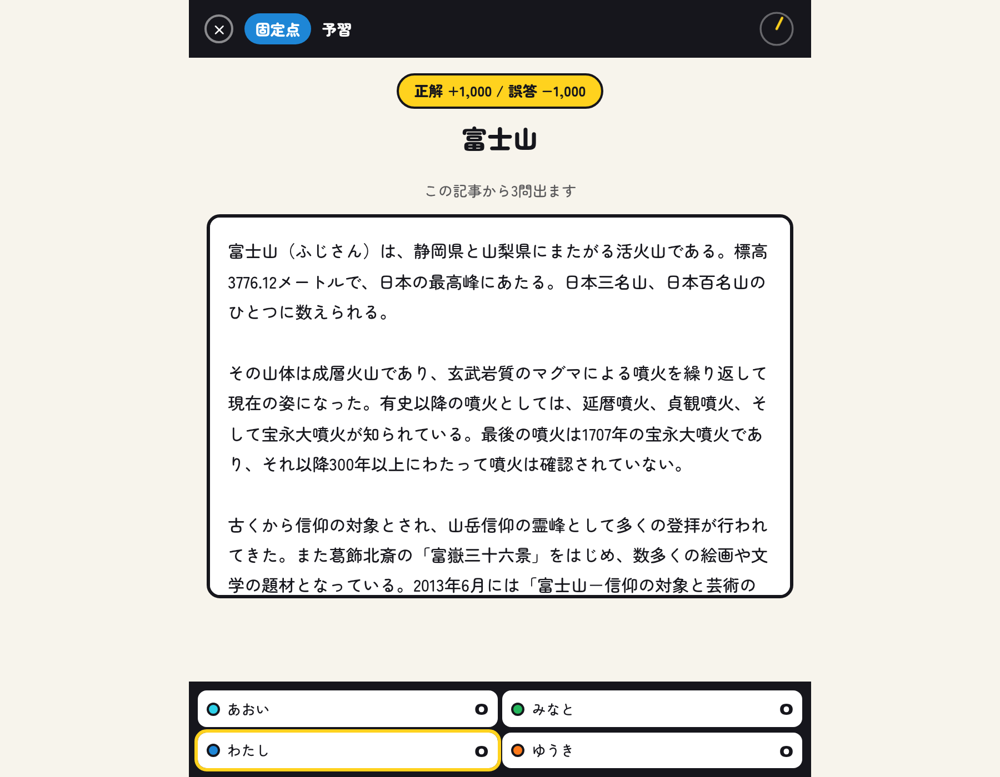
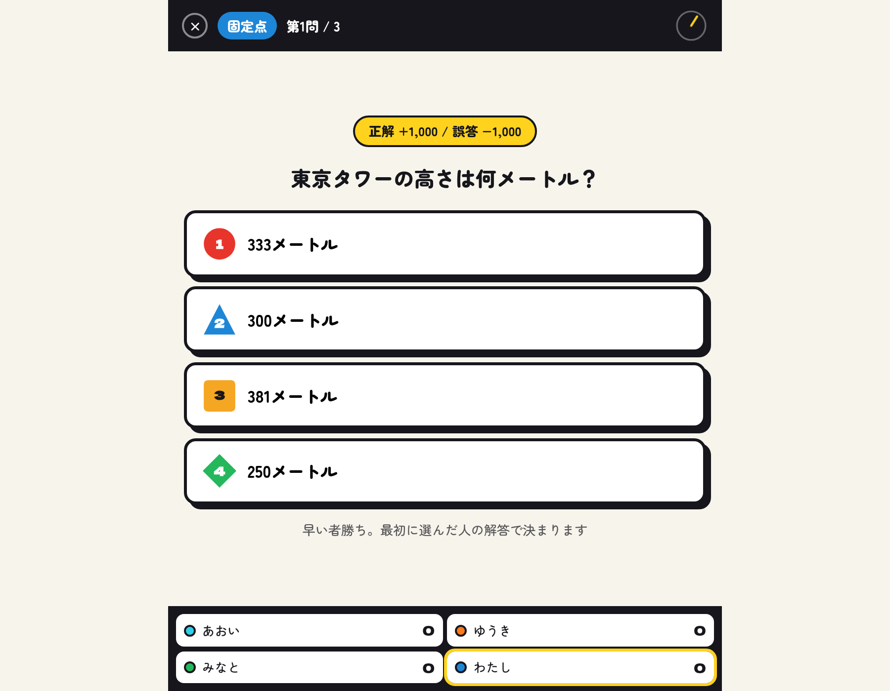
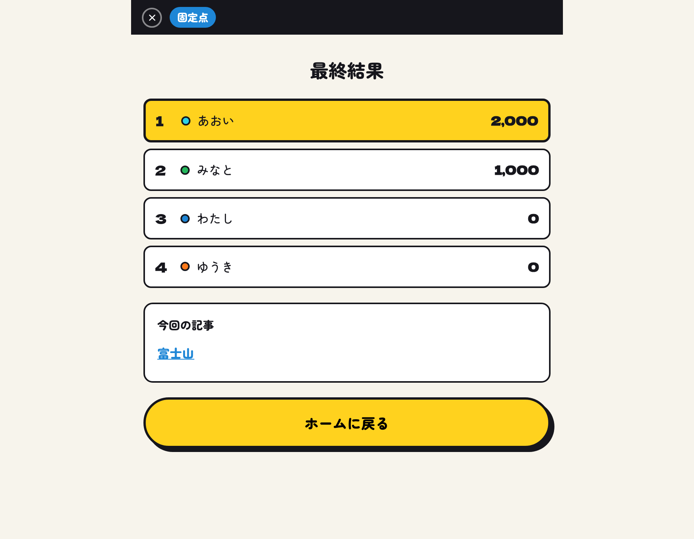

ヤマ張りが全て
1分では全部読めません。「ここが問われる」を見抜けるかどうかの勝負。読み方の作戦が、そのまま点数になります。
1分では全部読めません。「ここが問われる」を見抜けるかどうかの勝負。読み方の作戦が、そのまま点数になります。
うろ覚えと勘がガッチリ噛み合う瞬間があります。自分でもなぜ分かったのか説明できない正解が、いちばん気持ちいい。
必死になるほど、とんでもない勘違いが飛び出します。正解した人より、盛大に外した人のほうが盛り上がる。
予備知識も準備もいりません。記事さえあれば成立するので、学校でも職場でも、飲みの席でもそのまま遊べます。
1分予習
Wikipediaの記事が1つ渡されます。全員同じ記事を、ただ黙って読む時間です。 この1本から3問出ますが、どこが問われるかは分かりません。

クイズ
記事は消えて、問題と選択肢が出ます。最初に選んだ人の解答で決まり。正解なら加点、外せば同じだけ減点。

結果
最後に順位と、読んだ記事へのリンクが出ます。答えられなかったところは、そのまま読み返せます。

正解なら1,000点。いちばん素直なルールです。
記事のPV数と被リンク数が点数になります。有名な記事ほど高配点。
記事の中でいちばん大きい数字が点数。たまにとんでもない桁になります。